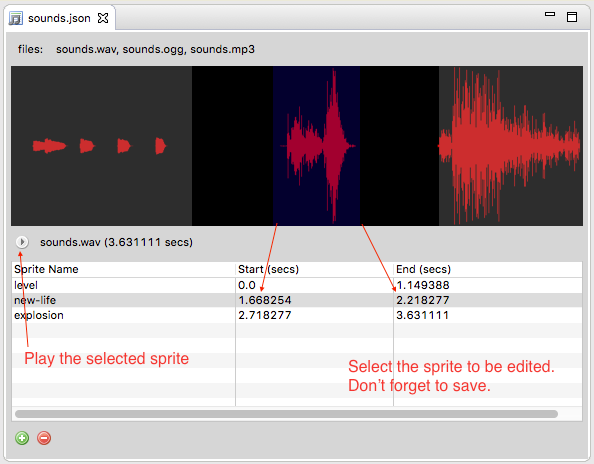

Audio Sprites Editor¶
Audio Sprites are generally a ‘hang over’ from pre-Web Audio days, where they were literally the only way to have multiple sound effects / music in a game. However they’re still pretty useful even for web audio playback, as it means less http requests and mostly retains compatibility with older devices that still don’t support Web Audio, or browsers like IE that don’t at all either. – Richard Davey .
Audio Sprites are a combination of audio files and a JSON configuration. The JSON follows the format of that created by tonistiigi. In Phaser Editor we provide an editor to easy create and edit audio sprites.
To create an audio sprites go to the File menu and select New > Audio Sprites File and it opens a dialog to select the container folder and set the file name.
When you press finish it creates a JSON file with the sprites definitions. This file is opened in the Audio Sprite Editor, then you can drag some audio files from the Project Explorer and drop them into the editor. When you drop the audio files into the editor they are appended to a single audio file. Remember that audio sprites contains a “big” audio file formed by the concatenation of the different sounds spaced by a little time of silence.
For example, if your audio sprites JSON is sounds.json, then when you add audio files to the editor, these audio files are appended to a sounds.wav file new sprites entries are created with default values.
This resultant sounds.wav file is transcoded to MP3 and OGG formats, so at the end you get two other sounds.mp3 and sounds.ogg files.
All the audio manipulation is done using the FFMpeg tool.
As you can see in the above image, the editor has two panels, the top panel show the audio waves and the range of the sprites. When you move the mouse over this panel a vertical line indicates the time at the cursor’s position.
In the bottom panel are listed the sprites. You can edit, add or remove the sprites. To edit it select the row of the sprite and click cell with the value you want to change.
If you drag new audio files, new sprites are created and get the name and range from the audio files.
It is possible that some audio files cannot be concatenated with a good result, audio files have a diversity of sources but we process them with the same ffmpeg configuration. In any case, if you have troubles concatenating the files, you can do it with a tool like Audacity and then edit the sprites info with Phaser Editor.